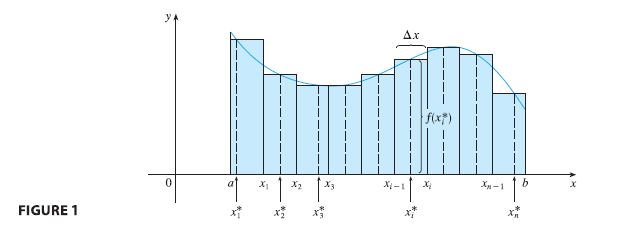

First let’s recall the basic facts concerning definite integrals of functions of a single variable. If \(f(x)\) is defined for \(a \le x \le b\), we start by dividing the interval \([a, b]\) into \(n\) subintervals \([x_{i-1}, x_i]\) of equal width \(\Delta x = (b - a)/n\) and we choose sample points \(x_i^*\) in these subintervals. Then we form the Riemann sum \[ \sum_{i=1}^{n} f(x_i^*) \Delta x \tag{1} \] and take the limit of such sums as \(n \to \infty\) to obtain the definite integral of \(f\) from \(a\) to \(b\):
\[ \int_a^b f(x) dx = \lim_{n \to \infty} \sum_{i=1}^{n} f(x_i^*) \Delta x \tag{2} \] In the special case where \(f(x) \ge 0\), the Riemann sum can be interpreted as the sum of the areas of the approximating rectangles in Figure 1, and \(\int_a^b f(x) dx\) represents the area under the curve \(y = f(x)\) from \(a\) to \(b\).